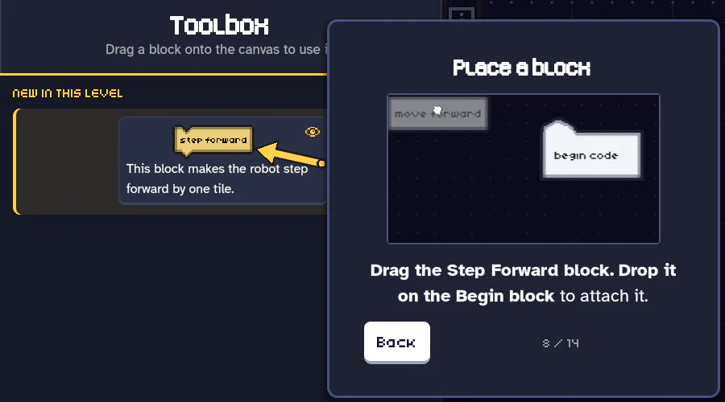
Python-inspired blocks
Blocks use Python's own words: print, input, if, elif, else, while, for, break and continue. What you learn carries over to typed code.
A UE thesis project Inspired by Python
Guide a robot through campus puzzles by snapping together Python-inspired code blocks.
See it in action
A real run, start to finish: pick blocks, snap them together, press play, earn your stars.
How to play
New blocks come with a short guided tutorial, so you're never thrown in cold.
Each level says what the robot has to do, like reach the green flag or show a line on the terminal, and how many blocks earn three stars.
Drag blocks from the Toolbox and attach them under Begin. Blocks snap into place, so there's no syntax to get wrong.
The robot carries out your program one block at a time, in every room of the level. The block that's running lights up.
If something goes wrong, the game tells you which block and why. Solve every room to earn up to three stars.
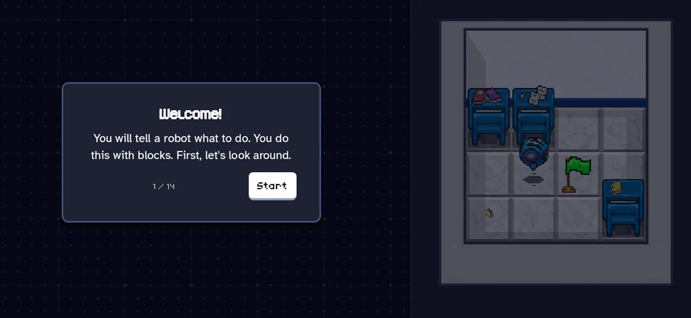
Features
Everything in UniCode is there to make the logic of a program something you can see.

Blocks use Python's own words: print, input, if, elif, else, while, for, break and continue. What you learn carries over to typed code.
The running block lights up, the robot moves, and the Variables tab shows every value as it changes.
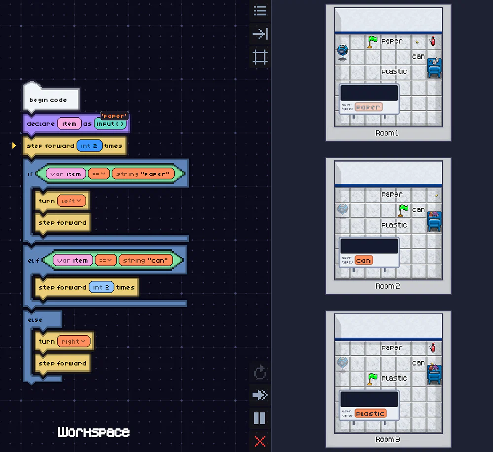
Many levels have two or three rooms with different layouts or inputs. One program has to solve them all, so you write general rules instead of one-off moves.
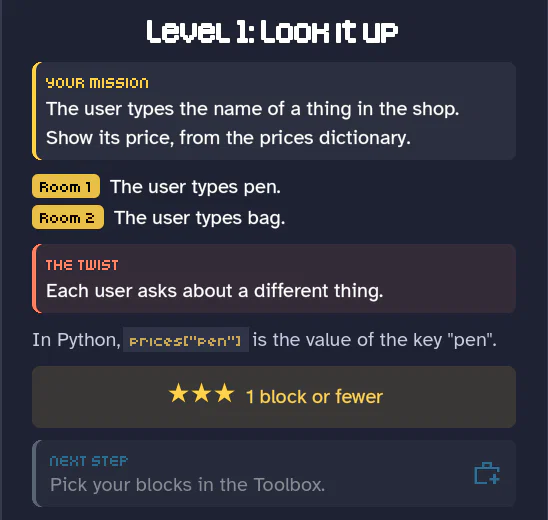
Many levels show the matching Python next to the mission, like prices["pen"], so the jump to typed code stays small.
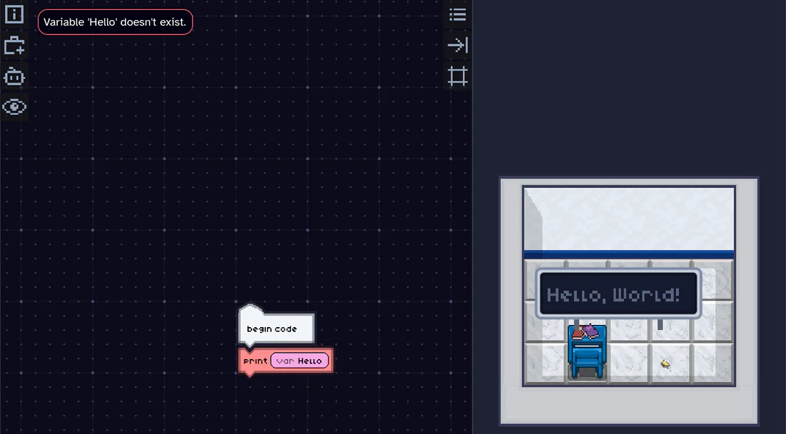
When a block can't run, the game marks it and says why, like Variable 'Hello' doesn't exist.
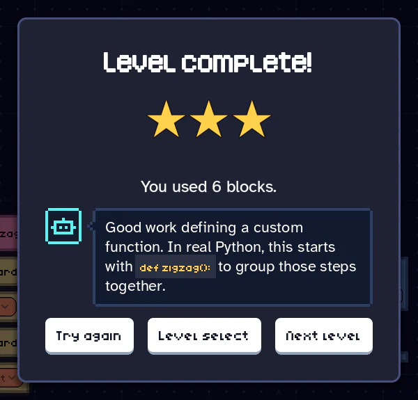
Solve a level with fewer blocks for more stars. Every win ends with a short AI comment on your own program.
What you'll learn
UniCode follows the order of CCP-1101, the first programming course at the University of the East, which is taught in Python. 93 levels in all, from your first print to reading files.
How to play.
3 levelsTalk with the user.
10 levelsKeep what you need.
10 levelsWork it out.
10 levelsChoose what to do.
10 levelsDon't repeat yourself.
10 levelsName a set of steps.
10 levelsZero to hero.
10 levelsFind things by name.
10 levelsKeep it for later.
10 levelsAfter working through the modules, students can:
if, elif and elsewhile and for loops, and stop early with break and continue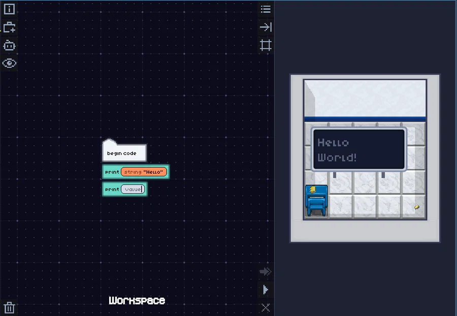
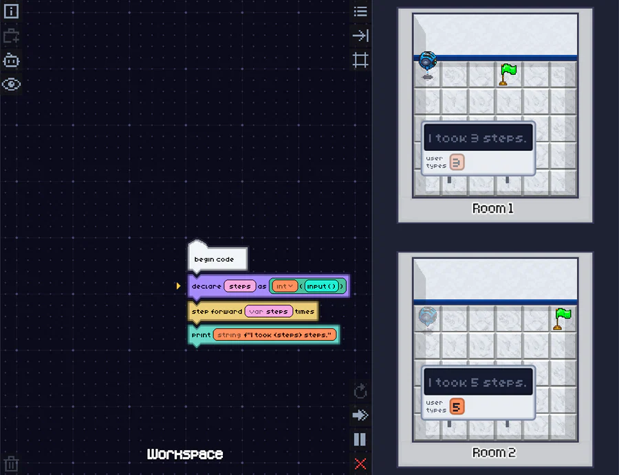
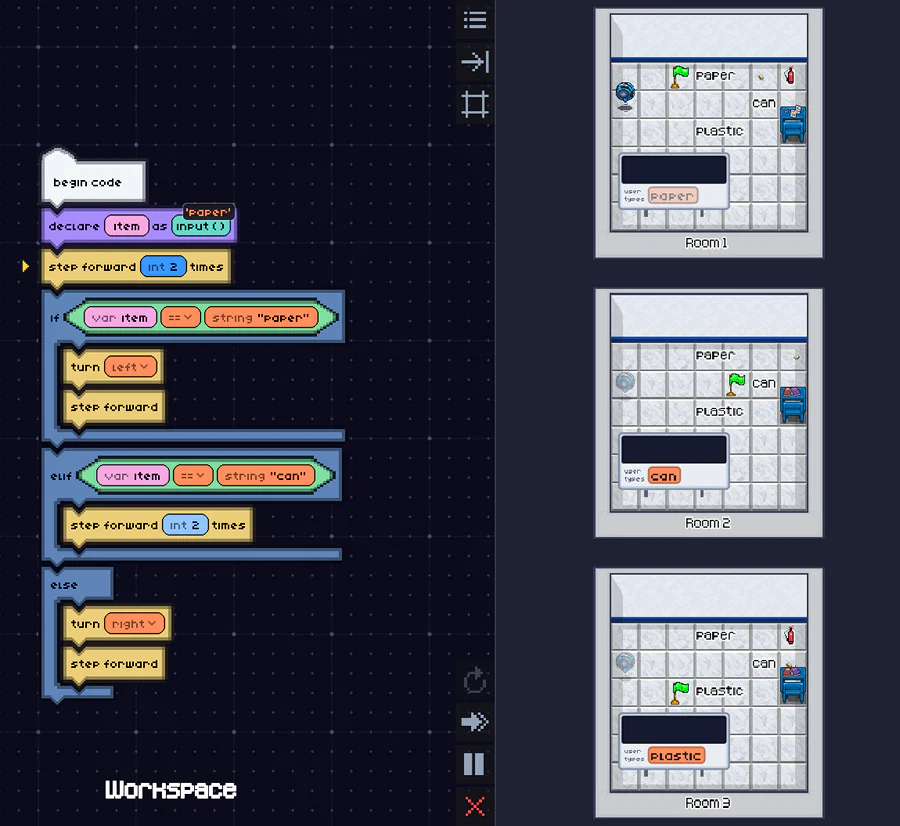
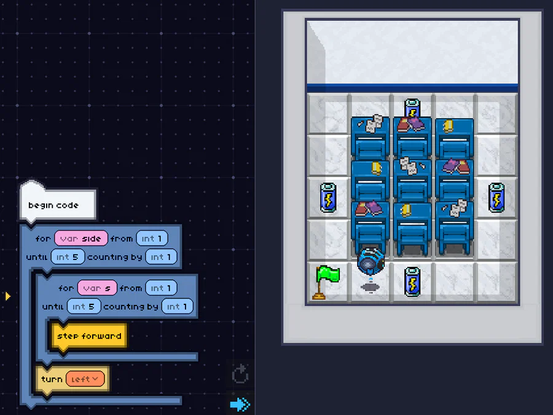
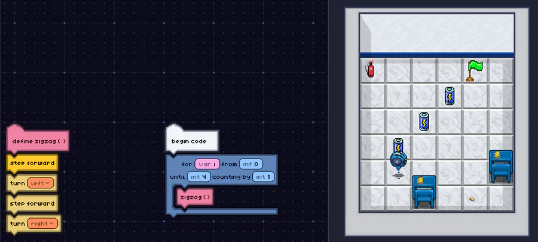
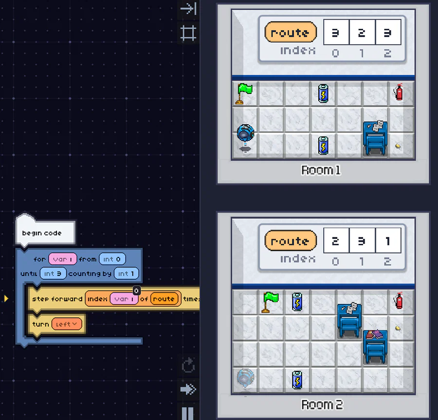
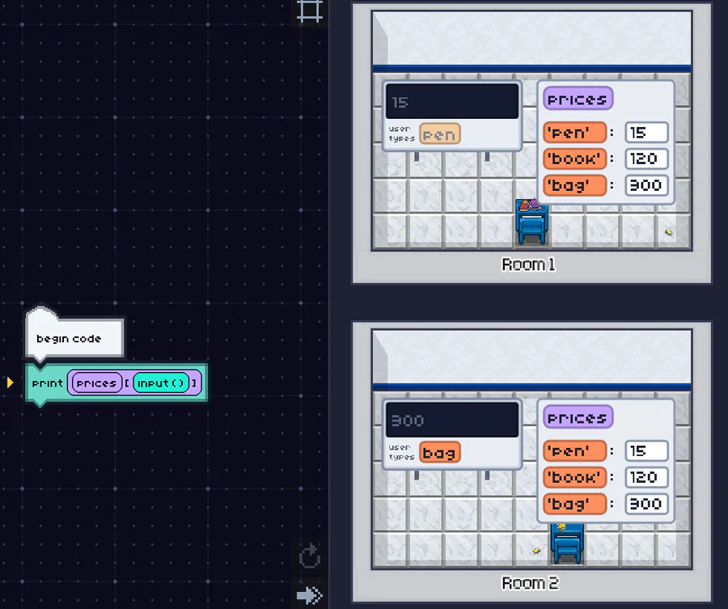
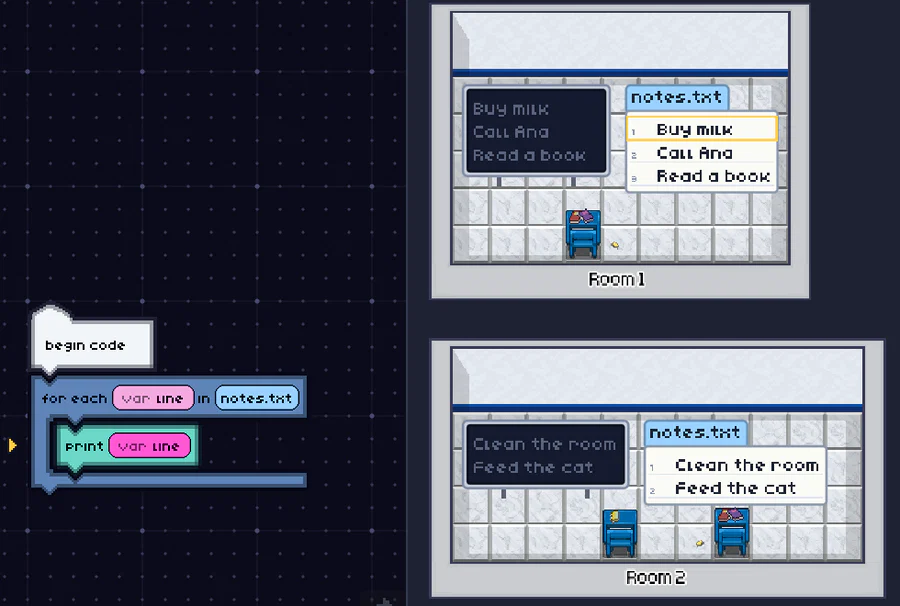
AI assistant
The assistant knows the level you're on and what your program just did. It guides you with hints and questions instead of handing over the answer.
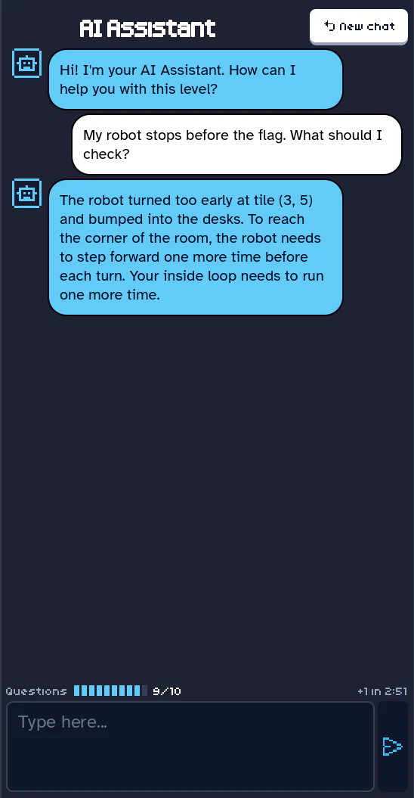
System requirements
Phones and tablets aren't supported yet. UniCode is made for a mouse and a bigger screen.
FAQ
Yes. UniCode is free to play in your browser.
No. The Tutorial module starts from zero, and every new block comes with a short guided tutorial.
Not quite. The blocks follow Python's keywords and rules, and many levels show the matching Python code, but you build programs from blocks instead of typing them. It's a stepping stone to writing Python.
Anyone who wants to learn or practice programming: students who want to improve their skills, developers who want a quick, playful refresher on the basics, and aspiring programmers who are just starting out.
Within a module, each level opens after you solve the one before it. The first level of every module is always open, so you can start any topic.
Yes, on the computer or browser you play on. To continue somewhere else, open Progress on the main menu, copy your progress code, then type it in under Progress on the other computer.
No. It gives hints and asks questions about your own run, and it never writes out the whole program. See AI assistant.
Our server doesn't. It passes your question, your blocks and pictures of the level to Google's Gemini model to write the reply, and only records numbers, like how long the reply took. Google handles what it receives under its Gemini API terms, so keep personal details, like your full name or passwords, out of the chat. See Privacy.
The Windows version works offline, except for the AI assistant and the comment on the Level complete card. The browser version needs internet to load.
Not yet. UniCode is built for a mouse and a bigger screen.
Five Bachelor of Science in Computer Science students at the University of the East, Manila, as their 2026 thesis. See The research.
Troubleshooting
The first visit downloads about 45 MB, which can take a while on a slow connection. Wait a moment, then refresh. Use an up-to-date Chrome, Edge or Firefox, and turn off extensions that block scripts.
Turn on graphics acceleration. In Chrome, it's under Settings, System. In Edge, it's under Settings, System and performance. Then restart the browser and update your graphics drivers.
UniCode isn't signed with a paid certificate, so Windows warns about it. Click More info, then Run anyway. Only run copies you downloaded from this page or our itch.io page.
Only blocks attached under Begin run. Check that your first block is snapped under Begin and not sitting loose on the workspace.
Something is in its way, like a wall or a desk. Turn first, or check the tile ahead before stepping.
Check your internet connection. Some school networks block it, so try another network. Your question isn't used up.
One question comes back every 3 minutes, and solving a level for the first time gives you 3 more. The message shows how long until the next one.
Progress is saved separately on each computer and browser. Clearing your browser data or playing in a private window starts fresh. If you copied your progress code, type it in under Progress to get your stars back.
That's a known issue with high-resolution Mac screens in the browser version. The game still plays fine. A Windows computer gives the best results.
The research
A research project presented to the Faculty of the College of Computer Studies and Systems, University of the East, Manila, in partial fulfillment of the requirements for the degree of Bachelor of Science in Computer Science.
2026